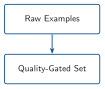
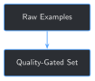

import sys
from pathlib import Path
BOOK_ROOT = Path(__file__).resolve().parents[2]
sys.path.insert(0, str(BOOK_ROOT / "code" / "chapter_02"))
from build_training_examples import extract_fields, extract_text
FULL_SET_DIR = BOOK_ROOT / "datasets" / "full_training_set"
def build_archive_records(full_dir: Path = FULL_SET_DIR) -> list[dict]:
records = []
for pdf_path in sorted(full_dir.glob("*.pdf")):
text = extract_text(pdf_path)
fields = extract_fields(text)
status = "ok" if fields["present_operations"] and fields["activity_planned"] else "unrecognized_format"
record = dict(fields)
record["file"] = pdf_path.name
record["status"] = status
record["rpt_num"] = int(fields["rpt_num"]) if fields["rpt_num"] else None
records.append(record)
return records
records = build_archive_records()
passed = [r for r in records if r["status"] == "ok"]
failed = [r for r in records if r["status"] != "ok"]
print(f"Extraction: {len(passed)}/{len(records)} reports passed")
print(f"Failed: {[r['file'] for r in failed]}")6 A Data Quality Gate for Training Data


Progress ██████░░░░░░░ 6 / 13 · Estimated time: 30-40 min · Difficulty: 🟢 Beginner
6.1 Learning objectives
By the end of this chapter, you will be able to:
- Run Chapter 2’s field extractor across the full 76-report archive instead of the 10-report sample, and read a real pass/fail rate at that scale
- Explain the difference between a hard failure (a report’s fields can’t be extracted at all — must be excluded) and a soft flag (fields extracted fine, but something about them deserves a human look before training)
- Detect field values duplicated across different reports, and distinguish likely-benign duplicates from ones that need review
- Explain why “extraction succeeded” and “this data is trustworthy to train on” are two different claims
6.2 Operational Problem
Oumy, who built Chapter 2’s small proof of concept from just 10 reports, asks the obvious next question now that Part II is about scaling that same pipeline to the full archive: “If we just point this extractor at all 76 reports, how do we know we’re not scaling up hidden problems right along with the data?”
Chapter 2’s extractor either finds both fields on a report or it doesn’t — a binary, visible failure Chapter 2 already handles by skipping the report. What it can’t tell you is whether two different reports somehow ended up with the exact same field value, which is a much quieter, easier-to-miss kind of problem. This chapter builds a gate that checks for both, run for real against all 76 reports.
6.3 Example: the same answer, two different reports
Chapter 2 and Chapter 3 both used report #49 — the day activity_planned read "FISHING OPERATIONS" — as a running example. Run this chapter’s extractor across the full archive, not just the 10-report sample, and a report three weeks later turns up something worth a second look:
NoteTwo reports, one identical field value
Report #49 (2020-12-07), present_operations: "CIRCULATE FOR TEMPERATURE"
Report #70 (2020-12-28), present_operations: "CIRCULATE FOR TEMPERATURE"Word-for-word identical, 21 days apart. That could be a completely routine, independently-occurring operation — or a sign something got copy-pasted or misfiled. Chapter 2’s extractor has no way to even notice this happened; it only looks at one report at a time.
6.4 Theory
TipEngineering Translation: data quality gate
A quality gate is a checkpoint data has to pass through before it’s trusted for the next stage — like a pre-shift equipment check. It doesn’t fix anything by itself; it stops something visibly wrong from silently making it further down the line, and it flags anything borderline for a human to actually look at.
TipEngineering Translation: hard fail vs. soft flag
A hard fail is unambiguous enough to act on automatically — Chapter 2’s “couldn’t extract required fields” is one, so that report gets excluded, no judgment call needed. A soft flag is something worth a human’s attention that isn’t automatically wrong — like this chapter’s duplicate values. Treating every soft flag as a hard fail would silently delete real, correct data; treating every hard fail as just a suggestion would let broken data through.
6.5 Why “just remove duplicates” falls short
The tempting, simpler rule: any field value that appears on more than one report is suspicious, so drop every report involved. Running that rule on this archive would delete report #6 ("RIGGING UP WITH FRONTIER DRILLING", identical to #5), report #33 ("DRILLING 8 3/4" PRODUCTION HOLE WITH BHA #14", identical to #32), and report #35 ("CORING", identical to #34) — three reports whose “duplicate” value is just the same operation genuinely continuing into the next day, which is completely normal in a real drilling program. This chapter’s gate checks which reports share a value, not just whether they do: report numbers one apart are almost certainly a continued operation; any bigger gap is what actually deserves review.
6.6 Implementation
6.6.1 Step 1: Extract fields from all 76 reports and check completeness
6.7 What problem are we solving?
Confirm Chapter 2’s extractor’s real pass rate at archive scale, not just on the curated 10-report sample where every quirk was already known.
6.8 Inputs
- Every PDF in
datasets/full_training_set/ extract_textandextract_fieldsfrom Chapter 2, reused unchanged
6.9 Expected Output
A status (ok or unrecognized_format) attached to every report.
Running this exact code prints:
Extraction: 75/76 reports passed
Failed: ['FORGE-16A-78-32_Completion_003_2021-01-06.pdf']6.10 What just happened?
75 of 76 reports — every drilling report, at full archive scale, not just the 10-report sample — extracted cleanly with Chapter 2’s exact same regex patterns. The one failure is the same completion report Chapter 2 already knew about, using different field labels entirely. That consistency is itself useful information: this archive’s drilling reports really do share one fixed layout, at scale, not just by coincidence in the small sample.
6.11 Production Reality
This archive comes from a single well, a single operator’s report template, over a few months. A multi-well, multi-operator archive would show a much lower pass rate here, with several different field layouts needing their own extractor (Chapter 2’s challenge exercise handles exactly one such case — the completion report). A production quality gate would need a library of layout patterns, not one regex per field.
6.11.1 Step 2: Find field values duplicated across different reports
6.12 What problem are we solving?
A report passing extraction doesn’t mean its value is trustworthy on its own — the same exact text on two different reports is invisible to a per-report check and needs comparing across the whole archive at once.
6.13 Inputs
- The
recordslist from Step 1
6.14 Expected Output
Every field value that appears on more than one report, with the report numbers involved.
from collections import defaultdict
def find_duplicate_values(records: list[dict], field_name: str) -> dict[str, list[int]]:
by_value = defaultdict(list)
for record in records:
if record["status"] == "ok" and record[field_name]:
by_value[record[field_name]].append(record["rpt_num"])
return {value: sorted(nums) for value, nums in by_value.items() if len(nums) > 1}
for field_name in ("present_operations", "activity_planned"):
print(f"Duplicate {field_name} values:")
for value, nums in find_duplicate_values(records, field_name).items():
print(f" reports {nums}: {value!r}")Running this exact code prints:
Duplicate present_operations values:
reports [5, 6]: 'RIGGING UP WITH FRONTIER DRILLING'
reports [32, 33]: 'DRILLING 8 3/4" PRODUCTION HOLE WITH BHA #14'
reports [34, 35]: 'CORING'
reports [49, 70]: 'CIRCULATE FOR TEMPERATURE'
Duplicate activity_planned values:
reports [32, 33]: 'DRILL AHEAD WITH BHA #14'
reports [47, 59]: 'DRILL AHEAD'6.15 What just happened?
Six duplicate groups turned up across both fields — four where the report numbers are exactly one apart (an operation continuing into the next day), and two where they aren’t: #49/#70 (21 days apart) and #47/#59 (12 days apart). Nothing here is auto-corrected or removed yet — this step’s only job is to surface every duplicate so Step 3 can decide which ones actually need a human’s attention.
6.16 Production Reality
This only catches exact text matches. A near-duplicate — the same operation described with slightly different wording or a typo fixed — would slip through entirely. Catching that reliably needs a fuzzy or embedding-based similarity check (Chapter 4’s tools are directly applicable here), which is real, valuable future work this simple version deliberately leaves out.
6.16.1 Step 3: Classify duplicates and produce the final gate report
6.17 What problem are we solving?
Turn the raw duplicate list into the actual verdict this chapter opened with: which duplicates are almost certainly fine, and which ones need a person to look before this data gets trained on.
6.18 Inputs
- The duplicate groups from Step 2
6.19 Expected Output
Each duplicate group labeled consecutive or needs_review, plus a final summary.
def classify_duplicate(rpt_nums: list[int]) -> str:
gaps = [b - a for a, b in zip(rpt_nums, rpt_nums[1:])]
return "consecutive" if all(gap == 1 for gap in gaps) else "needs_review"
def run_quality_gate(full_dir: Path = FULL_SET_DIR) -> dict:
records = build_archive_records(full_dir)
ok_records = [r for r in records if r["status"] == "ok"]
failed_records = [r for r in records if r["status"] != "ok"]
duplicates = {}
for field_name in ("present_operations", "activity_planned"):
for value, nums in find_duplicate_values(records, field_name).items():
duplicates[(field_name, value)] = classify_duplicate(nums), nums
return {"total": len(records), "passed": len(ok_records), "failed": failed_records, "duplicates": duplicates}
report = run_quality_gate()
needs_review = {k: v for k, v in report["duplicates"].items() if v[0] == "needs_review"}
consecutive = {k: v for k, v in report["duplicates"].items() if v[0] == "consecutive"}
print(f"Extraction: {report['passed']}/{report['total']} passed")
print(f"Duplicates: {len(consecutive)} consecutive (no action needed), {len(needs_review)} need review")
for (field_name, value), (_, nums) in needs_review.items():
print(f" {field_name}, reports {nums}: {value!r}")Running this exact code prints:
Extraction: 75/76 passed
Duplicates: 4 consecutive (no action needed), 2 need review
present_operations, reports [49, 70]: 'CIRCULATE FOR TEMPERATURE'
activity_planned, reports [47, 59]: 'DRILL AHEAD'6.20 What just happened?
The gate’s final verdict on this archive: 1 hard fail (excluded), 4 duplicate groups explained away as normal continued operations, and 2 flagged for a human to actually check before Chapter 7 formats this archive into training examples at scale. Neither flagged case is automatically rejected — "DRILL AHEAD" in particular is common enough phrasing that it may well be an honest coincidence, not an error. The gate’s job is to surface it, not to guess.
6.21 Practical exercise
🟢 Beginner
Try it yourself: run python code/chapter_06/data_quality_gate.py from inside book/, then open reports #49 and #70 from datasets/full_training_set/ and compare their PRESENT OPERATIONS: lines by eye.
You’ll know it worked when: the script prints 75/76 passed, 4 consecutive, 2 need review, and you can say in one sentence whether you think #49/#70’s match looks like a real coincidence or a data-entry duplicate.
6.22 Field notes
WarningField notes: the fishing report’s echo, three weeks later
Query: every duplicate present_operations value across the full 76-report archive.
Result: report #49 — 2020-12-07, the same day activity_planned read "FISHING OPERATIONS" in Chapter 2 and Chapter 3’s running example — has present_operations "CIRCULATE FOR TEMPERATURE". So does report #70, dated 2020-12-28.
Why: the archive shows report #49 sitting inside the packers-fail-to-fishing sequence (#48–#50) already discussed in earlier chapters, while #70 is three weeks later with no narrative connection to it at all — a different point in the drilling program entirely. Circulating to stabilize wellbore temperature is a genuinely common, unremarkable operation; there’s no reason it couldn’t happen twice, unrelated, three weeks apart.
Lesson: a duplicate flag is a question, not a verdict. This one most likely resolves to “yes, coincidence, both real” on inspection — but the gate’s job is only to make sure that judgment call gets made by a person instead of silently vanishing into 75 reports’ worth of training data.
6.23 Challenge exercise
🟠 Intermediate
Challenge: add a third check: report dates should strictly increase alongside report numbers. A scrambled or misfiled archive (two reports swapped, one from the wrong well mixed in) would show up here as an out-of-order or repeated date. A reference solution is at code/chapter_06/challenge/challenge.py — on a real run against this book’s archive, it reports 75 reports checked, 0 issues: every date in this archive is exactly where it should be.
6.24 Key takeaways
- A quality gate answers two different questions: which reports fail outright (hard fail, exclude automatically), and which ones are fine but worth a second look (soft flag, surface for a human).
- A naive “remove all duplicates” rule would have deleted three perfectly legitimate continued-operation reports in this archive. The pattern of the duplicate (consecutive vs. not) matters as much as the duplicate itself.
- “Extraction succeeded” and “this data is trustworthy to train on” are different claims — this chapter’s gate is what actually checks the second one, at the same 76-report scale Chapter 7 onward builds on.
- Even a real, verified archive like this one — genuinely clean on chronological order, with 0 issues found — is worth checking explicitly rather than assumed clean by default.
6.25 Repository files
| File | Purpose |
|---|---|
code/chapter_06/data_quality_gate.py |
Runs extraction and duplicate-value checks across the full 76-report archive |
code/chapter_06/challenge/challenge.py |
Reference solution: a chronological-order check |
notebooks/chapter_06_explore.ipynb |
Interactive companion notebook |
CautionCHECKPOINT — Chapter 6
Tip✓ WHAT YOU BUILT
data_quality_gate.py — checks the full 76-report archive for extraction failures and cross-report duplicate values, and separates what needs automatic exclusion from what needs a human decision. It leaves this archive with 75 reports that passed extraction, 2 of which still carry an open needs_review flag — not yet resolved either way. Chapter 7 builds its formatted, chunked training set on top of those 75 extractable reports, and should treat the 2 flags as a decision still owed, not a detail already handled.
6.26 What can you do now that you couldn’t do before?
You can run a real data quality check across an entire report archive before training on it, and you can tell the difference between a problem worth automatically excluding and one worth a human’s judgment — instead of either training on everything blindly or manually skimming 76 reports by eye.
6.27 Suggested next step
Coming up in Chapter 7: this chapter surfaced, for all 76 reports, which ones extract cleanly and which field values deserve a second look — it didn’t unilaterally decide the 2 needs_review cases, and it didn’t turn anything into a training example yet. Those 2 flags should be accepted or excluded, by a person, before Chapter 7 runs. Chapter 2’s approach, one regex extraction per report, worked fine for 10 reports typed out one at a time, but Chapter 7 needs to format and chunk 75 reports’ worth of training data at scale, without re-doing that work by hand.